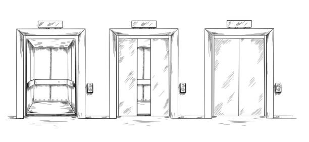

Grace's Elevator Speech

an amalgamation: a cracked spine of a brand new hardback novel just outside your reading range in the public library ; almond milk just starting to separate at the top of your coffee at 5pm on a Wednesday afternoon ; the sound of a child screaming through your kitchen window and for a split second you want to ask your mom to go outside and play
Dreams and Other Ponderings
I once had a dream I was wading in a tide pool with abnormally large clams of the most vibrant pink hues. I reached down to touch these anamolies and cut myself on their sharp and unassuming calcium edges. I began to feel ill, an uneasy feeling below the surface of my skin. I cut my arm to release the tension and out came pouring lifesize fish from the wound; back into the ocean where they belong.